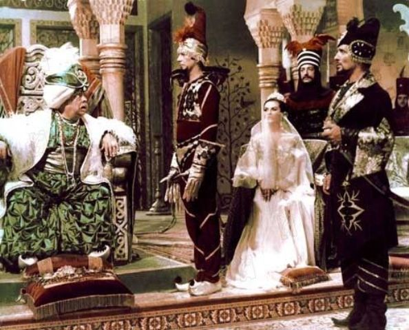
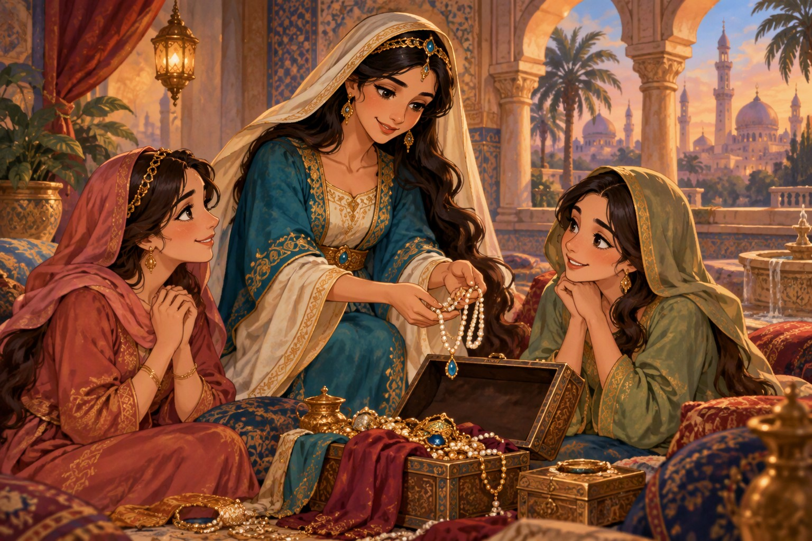
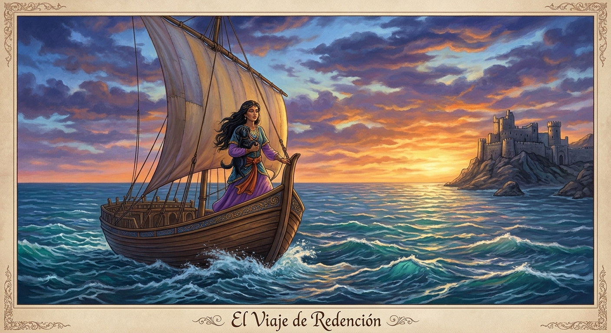
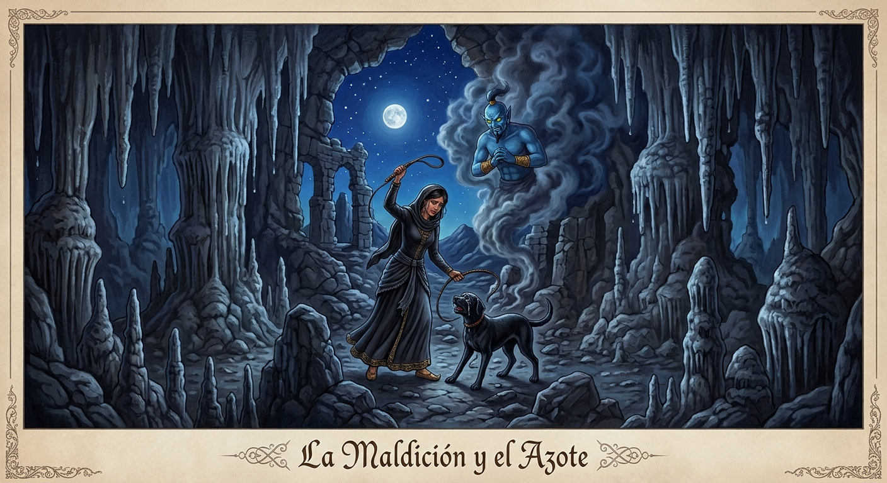

Las mil y una noches
Relato: Historia de Zobeida, la mayor de las jóvenes

Ilustración de portada
Ficha del cuento
- Nombre original: حكاية زبيدة (Hikayat Zubaida)
- Nombre en español: Historia de Zobeida, la mayor de las jóvenes
- Autor: Anónimo
- Año: Recopilados entre los siglos VIII y XIV
- Publicado en: Las mil y una noches
- Género: Cuento tradicional, literatura folclórica oriental, narrativa fantástica
- Tema: La lealtad familiar, la envidia entre hermanas, las consecuencias de las malas decisiones, la justicia y la recompensa a la bondad
- Idioma: Árabe
Escucha la reseña
Toda la información de esta página, narrada en audio.
Personajes principales
Zobeida
Es la hermana mayor de las jóvenes presentes en la historia. Destaca por su generosidad, inteligencia y sentido de responsabilidad hacia sus hermanas.
Amina
Hermana de Zobeida. Es una de las jóvenes que vive con ella y participa en los acontecimientos que llevan al descubrimiento de la historia ante el califa.
Fahima
La hermana más joven. Forma parte del grupo de hermanas que habitan la casa y comparte las experiencias narradas por Zobeida.
El Emir de los Creyentes
Gobernante ante quien Zobeida relata su historia para explicar los sucesos ocurridos en su casa.
Resumen
Zobeida, es una mujer inteligente y generosa que vive junto a sus hermanas.
Tras heredar bienes de sus padres, cada una toma decisiones diferentes sobre su vida.
Aunque sus hermanas enfrentan problemas debido a malas elecciones, Zobeida las ayuda y les brinda apoyo económico y emocional.
Con el paso del tiempo, la prosperidad de Zobeida despierta sentimientos de envidia en algunas de sus hermanas, quienes terminan traicionándola.
Durante un viaje comercial ocurren diversos acontecimientos que ponen a prueba su carácter y fortaleza.
Gracias a la intervención de un hada o ser mágico, la verdad sale a la luz y las hermanas culpables son castigadas transformándose en perras negras.
3 enseñanzas del cuento
-
Debemos evitar la envidia.
Los celos hacia los logros de otras personas pueden dañar las relaciones y llevar a tomar malas decisiones.
-
Ser generosos fortalece los vínculos.
Ayudar a los demás y actuar con bondad contribuye a crear relaciones más sanas y respetuosas.
-
Debemos actuar con responsabilidad.
Antes de tomar una decisión, es importante considerar sus consecuencias para evitar perjudicarnos a nosotros mismos o a los demás.
Ilustraciones de la obra

Zobeida en el centro ayudando a sus hermanas

El viaje de Redencion

La maldicion y el azote